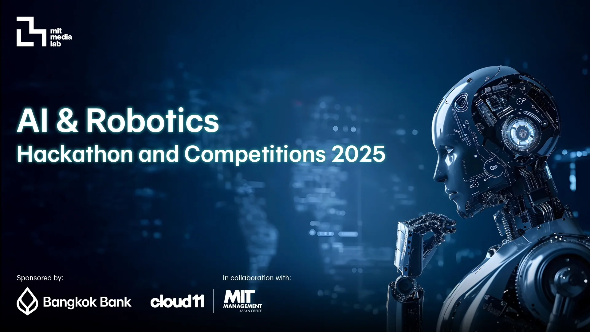
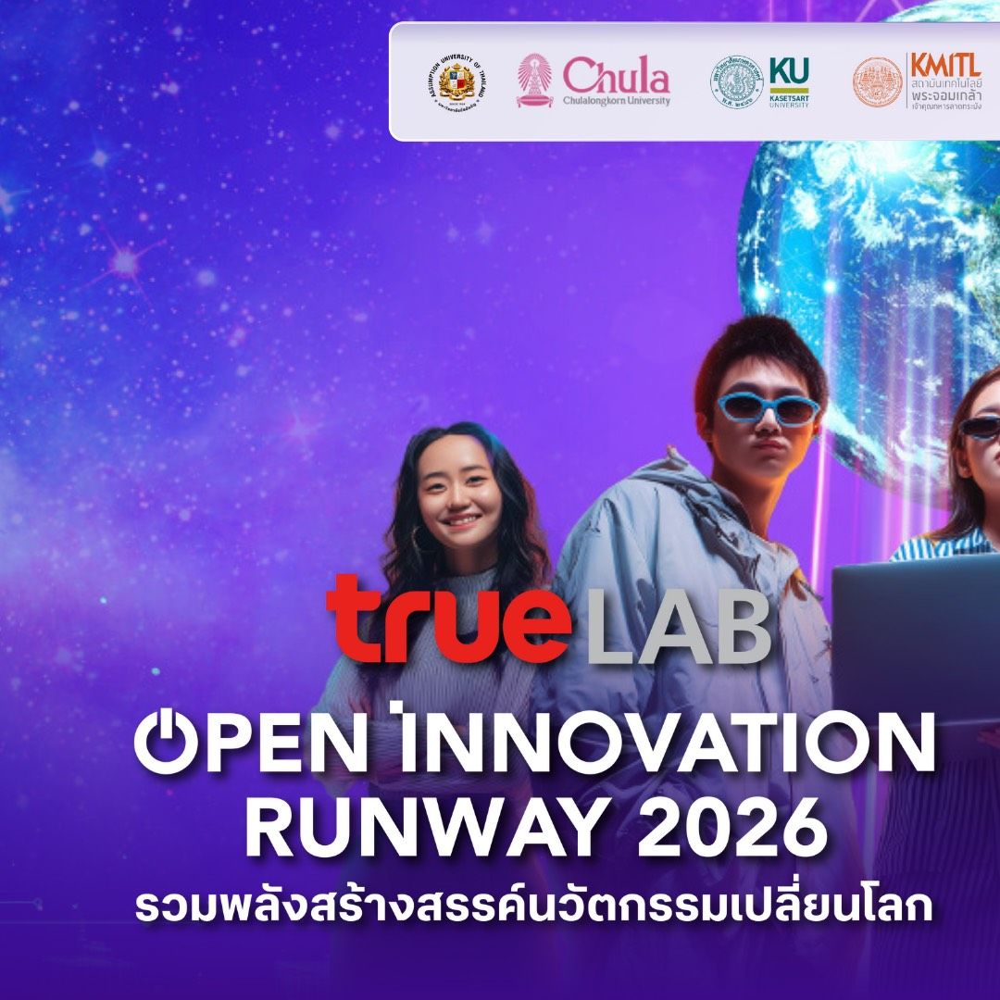
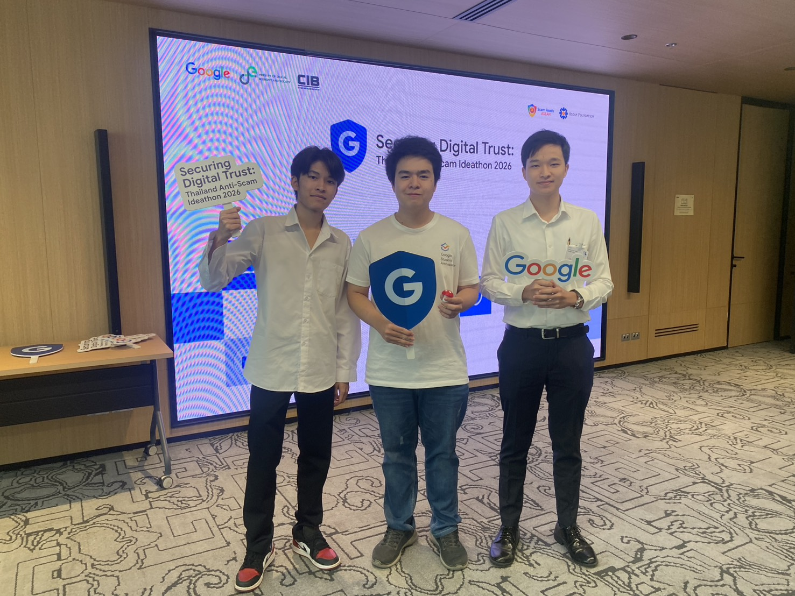
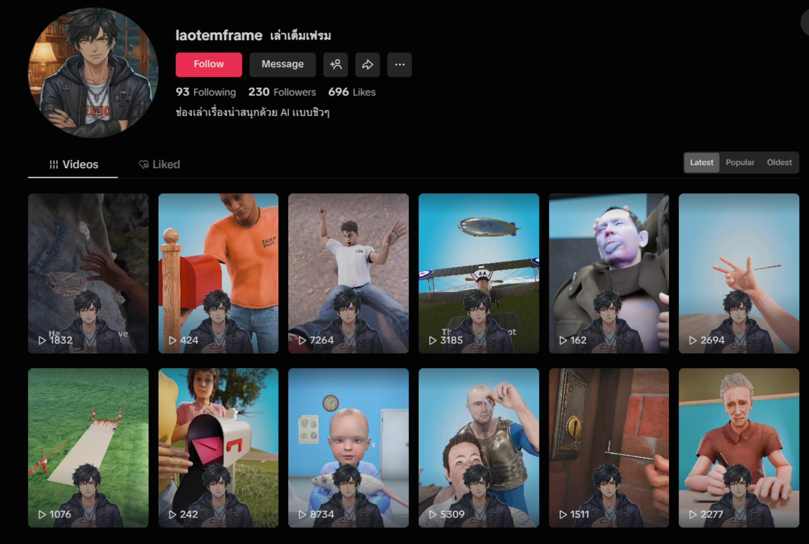

Competitive Projects
ผลงานที่ภาคภูมิใจและเทคโนโลยีที่เลือกใช้

Mind Buddy
Line OA และ Web Platform ดูแลสุขภาพจิตนิสิต — KU Innovation 5 ร่วมกับ กทม.
View Case Study →
Memo Bot
หุ่นยนต์ดูแลผู้ป่วยอัลไซเมอร์ พร้อม AI Fall Detection — MIT × Bangkok Bank Top 12
View Case Study →
KU Food Araidee (กินไรดี)
แอปแนะนำอาหารสำหรับนิสิต ม.เกษตรศาสตร์ ด้วย AI — KU AI Pioneers: Forward Challenge
View Case Study →
EnerLogic (PLATRUE)
ระบบบริหารพลังงานหลายแหล่งด้วย AI — KU True Lab Open Innovation Runway 2026 Top 10
View Case Study →
Hello Adventurer (KU JETH)
เกม Web RPG ฝึกสังเกตภัย Job Scam ด้วย Gemini AI — Google Anti-Scam Ideathon 2026 Top 20
View Case Study →Self Projects
ผลงานที่ภาคภูมิใจและเทคโนโลยีที่เลือกใช้

Video Factory
ระบบสร้างคลิป TikTok อัตโนมัติด้วย Python และ Generative AI (Gemini) ตั้งแต่เขียนบทจนถึงตัดต่อ
View Case Study →